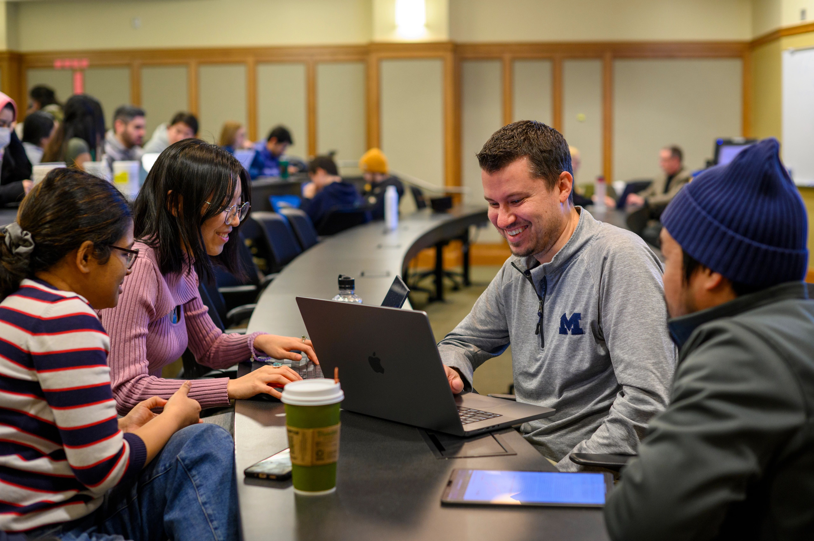

UMSI Tutoring & Academic Support
The Academic Success Team at UMSI is dedicated to supporting students inside and outside of the classroom. 
- UMSI Peer Tutoring
- Programming Peer Tutoring
- Math Peer Tutoring
- Additional Academic Support Resources
Sweetland Writing Center:
Sweetland Writing Center: The Sweetland Center for Writing supports student writing at all levels and in all forms and modes. Sweetland offers one-to-one tutoring for undergraduate and graduate students in our faculty-led Writing Workshop and undergraduate Peer Writing Center, and teaches writing courses from the undergraduate to the graduate level. Sweetland also provides support for all multilingual and international undergraduate students.
English Language Institute:
ELI exclusively serves members of the University of Michigan community with English for Academic Purposes courses and resources, GSI preparation, and TESOL courses that prepare students to teach English as a second or foreign language.
Math Lab:
Math Lab provides free tutoring for mathematics courses numbered through 217. Though help is not regularly available for other courses, we will attempt to answer the questions of any U-M student who comes to us for mathematics help.
Services for Students with Disabilities:
for Students with Disabilities (SSD) recognizes disability as an integral part of diversity and is committed to creating an inclusive and equitable educational environment for disabled students.
UMSI Peer Tutoring
UMSI Peer Tutoring offers free tutoring services to all UMSI students. Peer tutors are available to help with a variety of subjects, including programming, statistics, and research methods. Tutoring sessions are available in-person and online, and students can schedule appointments through the UMSI Tutoring & Academic Support website.